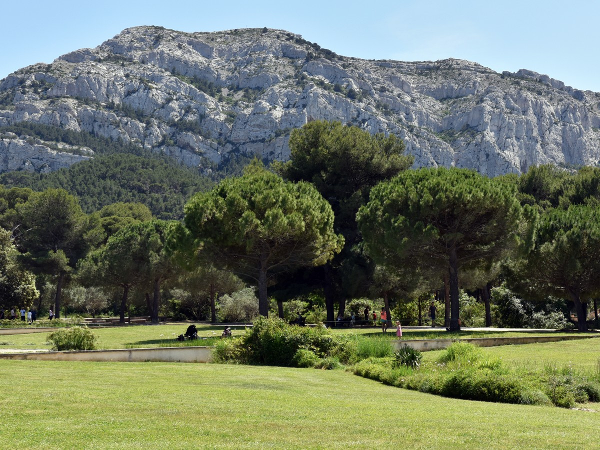

Parcs Publics à Marseille :
Parc Longchamp
Le Parc Longchamp est un parc public historique de Marseille, connu pour son architecture et ses jardins magnifiques.

Parc Borely
Le Parc Borely est un espace vert idéal pour une promenade tranquille, avec des étendues de pelouse, des arbres et des fontaines.

Parc Pastré
Le Parc Pastré offre un cadre naturel préservé, avec des sentiers de randonnée, des aires de pique-nique et une vue sur la mer.
Parc du 26e Centenaire
Le Parc du 26e Centenaire est un lieu de détente au cœur de la ville, offrant des espaces verts, des sculptures et des aires de repos.
Parc national des Calanques
Le Parc national des Calanques offre des paysages naturels époustouflants, des falaises calcaires, et des criques isolées.